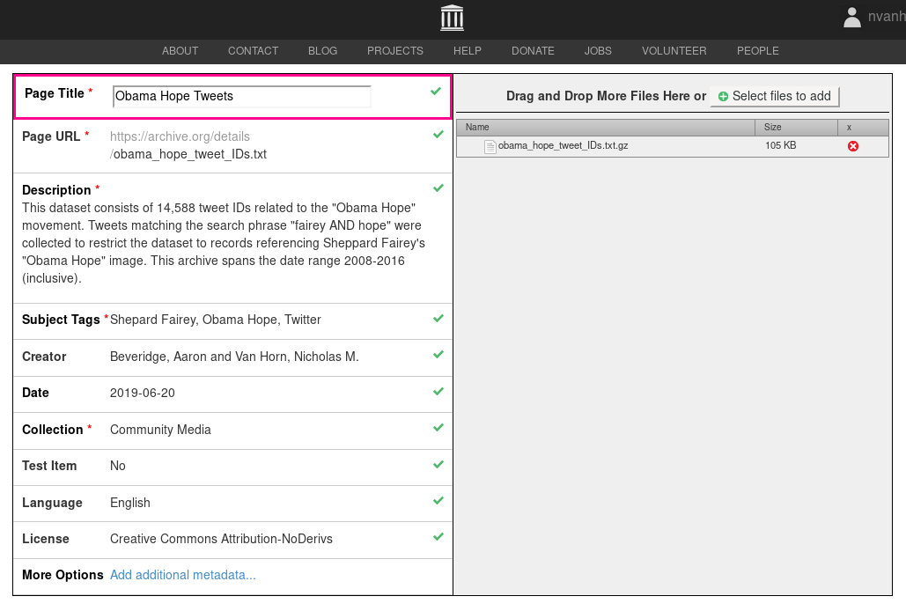

Data Archiving and Preservation
Among the most important projects in the areas of data accessibility and the preservation of digital data is The Internet Archive (archive.org), which works to preserve access to a broad diversity of digital sources with its WayBackMachine and other similar tools. The WayBackMachine provides a sustainable way to hyperlink webpages for articles—ensuring that webtexts will not suffer link rot. For example, many of the links in this article pointing to web pages that may be substantially changed or deleted utilize the WayBackMachine’s preserved instance of the webpage, rather than directing readers to the source material directly. We also rely on this same technique for the archive of Obamicons, curated for this collection.
A project similar to The Internet Archive, called DocNow, “support[s] the ethical collection, use, and preservation of social network data.” DocNow’s preservation of Tweet ID datasets represents a significant contribution to the sustainability of data-driven methods in the digital humanities, and this section shows digital visual scholars how to archive and preserve social network datasets for research. The Obama Hope Tweets dataset that we collected for this chapter is now available through DocNow’s catalog of Twitter datasets. As DocNow continues to grow their archive of Twitter data, they now have a wide diversity of social movement and political datasets. For example, they archived 39,622,026 tweet IDs related to public discussions of climate change, from September of 2017 until May of 2019 (tags: climate change, environment, politics). They also have a #blacklivesmatter dataset, consisting of 17,292,130 tweets from January of 2016 until March of 2017 (tags: blacklivesmatter, activism).
The method we forward in this section can be used for any set of Tweets collected by any means that retain the original Tweet ID for each message, including those datasets generated by MassMine (Van Horn and Beveridge). We have added rehydration technology to MassMine, which provides the necessary tools for researchers to download the full “rehydrated” datasets from Twitter. This “rehydration” terminology and method is required by Twitter’s own terms of service for their developers (users of their API), and it does come with limitations. While rehydration is a roundabout process, designed in principle to provide individual Twitter users with some measure of control over their own data, the downside is that these curated histories of Tweets are not exactly accurate or stable. Because Twitter forces rehydration through Twitter's own server, individual users can (and often do) revise their Twitter histories by deleting previous posts. Certainly, we believe that individual users should have control over their data—including the ability to delete past posts—but this represents an obvious problem for the rehydration methodology as designed by Twitter. Instead of resurrecting a tweet as it originally was written at the time of archiving, rehydrating a tweet will return its current form regardless of its original age and content. Rehydrating a deleted tweet will fail to retrieve the original full text. This trade-off with user agency is worth it, in our opinion, but it means that fully recoverable Twitter datasets are not guaranteed.
For this project, a dataset of 14,588 tweets were collected spanning the years 2008 to 2016, inclusive. The keywords guiding the data collection were restricted to "fairey AND hope" to gather posts that were specifically responding to, commenting on, or sharing content associated with Sheppard Fairey's "Obama Hope" image. We tested a range of queries like “Obama AND hope” using Twitter’s advanced search functionality, but many of the queries returned substantial noise. For example, we would see lots of tweets like, “I sure hope Obama can fix healthcare,” and other prevalent uses of the words “Obama AND hope” that did not at all address Fairey’s poster or its many remixes. Other more complex queries had similar issues, and while they returned substantially more data, they were far too sparse regarding tweet’s about Fairey’s Obama Hope.
Preparing the data for sharing through the DocNow web archive involved first reducing the tweets to individual identifiers. Common practices for DocNow’s catalog reveal that tweet IDs are shared in plain text, a robust format that prevents software lock-in. Individual records are arranged with one ID per line, separated by newlines only. In this format, the Obama Hope Tweets are self-contained in file of 242 kilobytes. Finally, the file was compressed using gzip—a free and open source compression software—reducing the final shareable size to 106 kilobytes.
Due to DocNow's integration with GitHub, archiving datasets is entirely possible within DocNow's own website repository. However, convention and good practices recommend a proper repository, such as the Internet Archive (https://www.archive.org), which includes proper categorization, search, and integration through metadata support. Creating a new collection on the Internet Archive requires a free account, which can be accomplished quickly following the links provided on their website. Once in possession of an account, adding a prepared dataset requires little time. First, click on the "Upload" link provided at the top right of any archive.org web page. When prompted, click on the "Upload Files" button (Figure 3).
Figure 3
From here, the Internet Archive provides an intuitive drag-and-drop interface (Figure 4) for selecting your tweet ID data file. Be sure to name the file appropriately on your local computer before beginning this step. Once uploaded, the interface provides a method to add custom metadata to the collection (see Figure 5 for a complete list). This final step also provides an opportunity to set an appropriate license. For this project a Creative Commons "Attribution-NoDerivatives 4.0 International" license was chosen. Take special note of the "Page URL" field in the metadata summary. This link is necessary when including your collection in the DocNow archive.
Figure 4
Figure 5
While the Internet Archive provides a reliable and centralized online library for sharing information of all kinds, we elected to further register our dataset with DocNow. Documenting the Now's stated goal of "chronicling historically significant events [on social media]" provides scholars with a centralized location to document events important to digital citizenry. We support such data documentation and transparency efforts through our own submission, and hope that others will help to enrich such databases with their own contributions. Thankfully, DocNow's aim to simplify the process for archivists delivers on its promises, in our opinion, but please note that this process will require a free account at https://github.com/. To begin, visit https://www.docnow.io/ and navigate down the page to find the link for the "Tweet Catalog." Click on the "Add yours!" link found under the Tweet Catalog icon (see Figure 6) to visit https://github.com/DocNow/catalog.
Figure 6
A simple set of provided directions detail how to add your dataset to the repository. In short, the process involves adding the metadata of a collection, including the URL that points to your dataset on archive.org, to a plain text document on Github.com. The metadata document is in YAML (YAML Ain't Markup Language) format, an open standards set of rules for encoding information in plain text. Adding a collection is simple, even for those uninitiated with YAML formatting, as the editing itself can be done directly in the browser, and proper formatting can be easily accomplished by mimicking other entries found in the database file (Figure 7).
Figure 7
Once your edits are complete, you can submit the revisions and make a pull request (a formal request on GitHub for the maintainers of DocNow to inspect and confirm your addition to the database). The process of initiating a pull request can be completed with a click of a clearly-identified button in your browser, requiring very little technical knowledge. A message through Github will confirm once your collection is officially added to the DocNow repository, after which time changes should be reflected in the Tweet Catalog archive at https://www.docnow.io/catalog/.
XXX conclude and transition XXX
Next Section